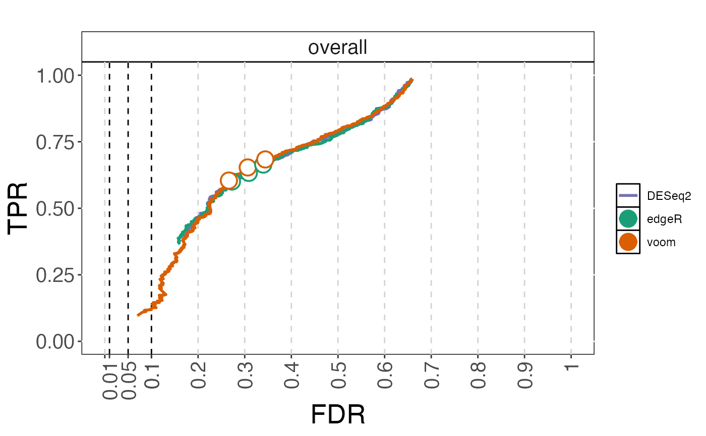

Plot observed true positive rate (TPR) vs observed false discovery rate (FDR), for given adjusted p-value thresholds and/or as curves traced out by considering all threshold values.
plot_fdrtprcurve(cobraplot, title = "", stripsize = 15, titlecol = "black", pointsize = 5, xaxisrange = c(0, 1), yaxisrange = c(0, 1), plottype = c("curve", "points"), linewidth = 1)
| cobraplot | A |
|---|---|
| title | A character string giving the title of the plot. |
| stripsize | A numeric value giving the size of the strip text, when the results are stratified by an annotation. |
| titlecol | A character string giving the color of the title. |
| pointsize | A numeric value giving the size of the plot characters. |
| xaxisrange | A numeric vector with two elements, giving the lower and upper boundary of the x-axis, respectively. |
| yaxisrange | A numeric vector with two elements, giving the lower and upper boundary of the y-axis, respectively. |
| plottype | A character vector giving the type of plot to construct. Can be any combination of the two elements "curve" and "points". |
| linewidth | The line width used for plotting |
A ggplot object
Charlotte Soneson
data(cobradata_example) cobraperf <- calculate_performance(cobradata_example, binary_truth = "status", aspects = c("fdrtpr", "fdrtprcurve"))#> Warning: Object doesn't have a slot sval. Please run update_cobradata(). For consistency, I will return an empty data.frame#>#>#>cobraplot <- prepare_data_for_plot(cobraperf, colorscheme = "Dark2", incltruth = TRUE) plot_fdrtprcurve(cobraplot, plottype = c("curve", "points"))#> Warning: Removed 3 row(s) containing missing values (geom_path).